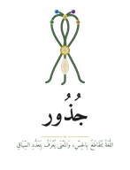

جُذورJUTHUR · MCMXXVI
إِجازَةُ القارِئِ الصَّغيرِ
تُمنَحُ على سُنَّةِ إجازاتِ القُرّاءِ — قراءةٌ قبلَ القراءة
تُشهِدُ مطبعةُ جُذورَ أنَّ القارئَ الكريمَ / القارئةَ الكريمةَ
قد قرأَ من رِواقِ القِصَصِ الحِسّيّةِ قصّةً،
بيَدٍ تَلمِسُ، وأُذُنٍ تُصغي، وقلبٍ حاضرٍ — بعيدًا عنِ الشّاشاتِ،
فاستحقَّ هذهِ الإجازةَ، وأُذِنَ لهُ أن يَقرأَ ويُقرِئَ مَن حولَهُ.
المُرشِد/ة:
التاريخ:

مطبعةُ جُذور · دبي · MCMXXVI · صمّمه وطوّره د. عادل ف. عامر · Designed and developed by Dr. Adel F. Amer